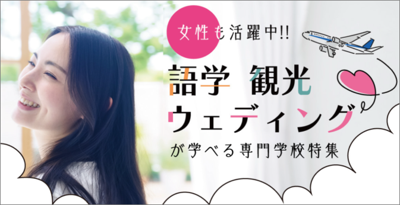

分野別特集ページ(制作・運用)
「知って、広がる」
各分野の職業や、その先にあるビジョンを届ける特設サイトです。 このページとの出会いをきっかけに、その分野に対して「あ、いいかも」「じぶんにあっているかも」と、等身大の興味を持ってもらえるようなコンテンツ作りを目指しました。
Problem & Solution
1. 将来の解像度を高める
単なる学校情報の羅列ではなく、職業ごとの「ビジョン」や「やりがい」を言語化。進路に悩む高校生が、自分の未来を具体的にイメージできる仕組みを整えました。
2. コンテンツの一貫性と専門性
自社ブランドのトーンを維持しつつ、観光・語学・ブライダルといった各分野の特性に合わせた情報収集とライティングを行い、信頼感のあるコンテンツを実現しました。
3. アクションへ繋げる動線設計
「知る」から「動く」へ。職業への興味を、オープンキャンパスやイベント申込という具体的な行動へスムーズに繋げるUIデザインとコーディングを実装しました。
Key Features
「職種×資格」の多角的アプローチ
高校生が将来を考える際、職種名だけでは具体的なアクションがイメージしにくいという課題がありました。 そこで、各職業の業務内容だけでなく、**「必要な資格・スキル」をセットで掲載**。さらに、時流に合わせたインバウンド需要や女性活躍の視点も盛り込むことで、業界の今と未来をフラットに学べる情報設計を行いました。
興味をアクションへ変える導線設計
「知って終わり」にさせないよう、各学校の特長を簡潔なキャッチコピーと共にカード形式で配置。 スマホ閲覧がメインとなる高校生に配慮し、**「詳細を見る」から「資料請求・イベント申込」までをストレスなく繋ぐ**UIデザインとコーディングを実装。ブランドの世界観を崩さずに、メディアとしてのコンバージョン（動員）機能を最大化させました。
自分事化を促す「ビジョン」の言語化
「あ、いいかも」という直感を大切にするため、硬い説明文ではなく「やりがい」や「目指すべき姿」に焦点を当てたライティングを徹底しました。 情報収集から自ら担当することで、「素敵な思い出を演出する」「最高の旅をサポートする」といった、**ユーザーが自分を重ね合わせやすいエモーショナルなフレーズ**を随所に配置し、心理的ハードルを下げています。